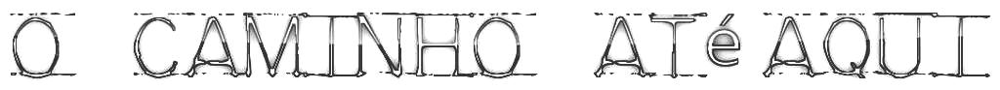
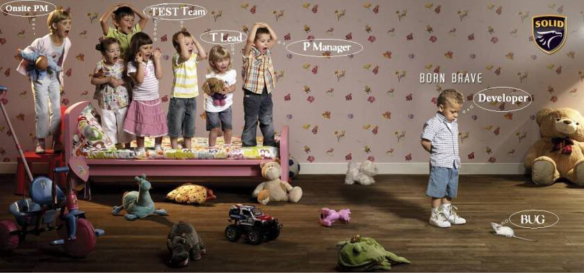
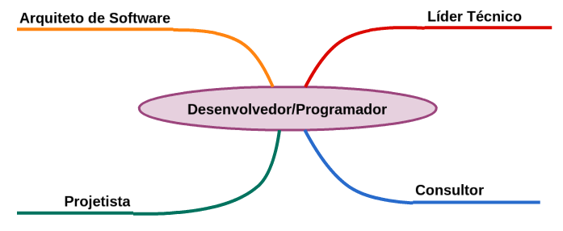
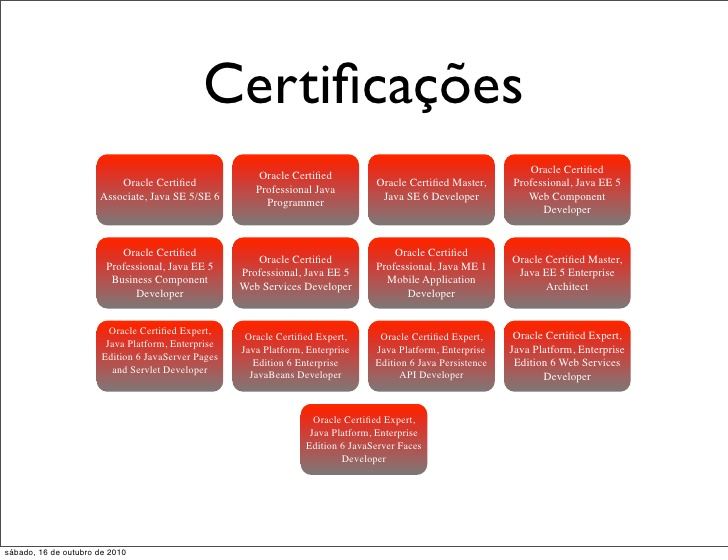
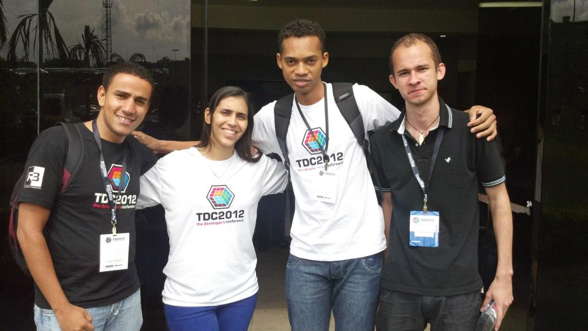

A Jornada do Desenvolvedor
De Padawan a aprendiz Jedi
Oi, eu sou o Josimar!
Bacharel em S. de Informação por Formação
Desenvolvedor por Paixão
Pos-Graduando em S. para Web

2010 - Início da jornada
2012/2013 - Programador na CapuL
(Obrigado Romulo!)
2014 Desenvolvedor Java Junior na NT Soluções
(Obrigado novamente Romulo e ao Sensei Diego!)
2015 Desenvolvedor Java Pleno na 3Way Networks
Carreira e Mercado
Sob a pespectiva de um dev

Carreira e Mercado
Sob a pespectiva de um dev

Carreira e Mercado
Sob a pespectiva de um dev
Carreira e Mercado
Sob a pespectiva de um dev

Carreira e Mercado
Sob a pespectiva de um dev
Carreira e Mercado
Salários
Sênior
P/M: Salário de 2015: R$6.500 – 10.000
G: Salário de 2015: R$8.000 – 12.000
Pleno:
P/M: Salário de 2015: R$4.500 – 6.500
G: Salário de 2015: R$5.000 – 8.000
Júnior:
P/M: Salário de 2015: R$3.500 – 5.000
G: Salário de 2015: R$3.500 – 6.500
Fonte: www.exame.com
Lições Aprendidas
Aprenda inglês!
Lições Aprendidas
Não se limite!

Lições Aprendidas
Contribua com projetos open-source!

Open source é bom para mim. Vou abraçar totalmente isso.
Onde me encontrar?
- Gmail: josimaralves.ti@gmail.com
- Twitter: @DevPadawan
- Github: @devpadawan